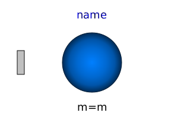

This model demonstrates the usage of model Parts.PointMass in a point gravity field. 6 point masses are connected rigidly together. Translating such a model results in an error, because point masses do not define an orientation object. The example demonstrates that in such a case (when the orientation object is not defined by an object that is connected to a point mass), a "MultiBody.Joints.FreeMotion" joint has to be used, to define the the degrees of freedom of this structure.
In order to demonstrate that this approach is correct, in model "referenceSystem", the same system is again provided, but this time modeled with a generic body (Parts.Body) where the inertia tensor is set to zero. In this case, no FreeMotion object is needed because every body provides its absolute translational and rotational position and velocity as potential states.
The two systems should move exactly in the same way. The system
with the PointMasses object visualizes the point masses in "red",
whereas the "referenceSystem" shows its bodies in "blue". 
| Name | Description |
|---|---|
|  PointMass | Point mass used at all places of this example |
|
|
For comparison purposes, an equivalent model with Bodies instead of PointMasses |